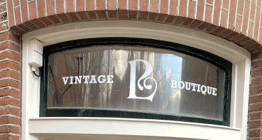
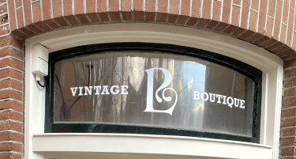

Info
SustainStyle geeft jou stijlvolle alternatieve op fast fashion in Amsterdam. Wij zetten een paar lokale kleding winkels en merken in de spotlight.
SustainStyle geeft jou stijlvolle alternatieve op fast fashion in Amsterdam. Wij zetten een paar lokale kleding winkels en merken in de spotlight.
Fast fashion is het bedrijfsmodel van veel grote mode bedrijven zoals Zara of Shein, waarbij kledingstukken snel en goedkoop geproduceerd worden om aan de laatste trends te voldoen. De kleding is van mindere kwaliteit en wordt vaak gemaakt in sweatshops in ontwikkelingslanden met slechte arbeidsomstandigheden.
Fast fashion stimuleert overconsumeren doordat de kleding snel kapot gaat of uit trends vallen, dit is daarom niet goed voor het klimaat.
Om zo duurzaam mogelijk te shoppen kan je het beste gaan thriften of duurzame merken kopen. Koop kleding van hogere kwaliteit die langer meegaat, hiervoor betaal je meestal wel iets meer maar je kan er ook jaren mee door.